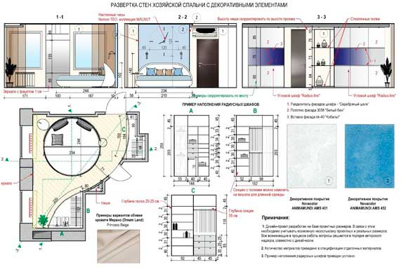

Развертки основных помещений

Після того, як затверджена остаточна концепція і підібрані необхідні матеріали, дизайнер розробляє розгортки стін для всіх приміщень об'єкта. На підставі цих розгорток будівельники згодом будуть виконувати фінальний етап ремонтних робіт - оздоблення стін. Замовнику ж розгортки дають наочне уявлення про те, яка кількість оздоблювальних матеріалів буде потрібно, про розстановку меблів щодо стін і її габаритах, а також про розташування всіх планованих декоративних елементів - фотошпалер, панно, дзеркал, стінових панелей і так далі.
Як і інші креслення і плани, які створюються для дизайн-проекту, розгортки забезпечуються примітками, які повинні спрямовувати та коректувати хід робіт, і звертати особливу увагу будівельників, менеджерів магазинів оздоблювальних матеріалів і меблів, самих замовників на окремі важливі деталі і нюанси. Зокрема, розгортка кухні дозволяє швидко розрахувати вартість готового гарнітура у різних компаній і прийняти оптимальне рішення, виходячи зі співвідношення ціни і якості.